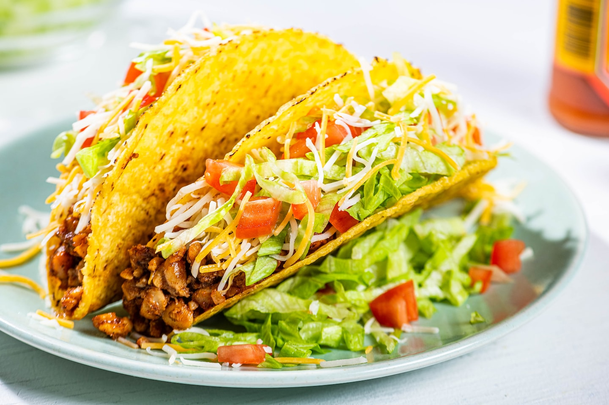

Simple Weekday Tacos

Description
Just some standard crunchy weeknight tacos
- 1 lbs lean-ish ground beef
- 1 onion, diced
- 1 packet Old El Paso taco seasoning
- Grated sharp cheddar
- Crunchy taco shells
- Diced tomatos
- Whatever taco sause you have
- Chopped iceberg lettus
Steps
- Cook the onions slightly before adding the ground beef to brown.
- Add the seasoning packet with about 1/3 water.
- Cook until much of the water has reduced.
- Add ~1/4 cup grated cheese to the mix (this helps thicken the sauce.
- Construct tacos as you wish!